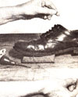

You'll need to cut a length of fiber that allows about four inches for each inch of seam to be closed . . . and another 18 inches for ease in stitching. Next, hold the beeswax in one hand and the end of the thread in the other, and pass the string over the wax several times. You'll want to then reverse the ends and repeat the process before threading needles on both of the line's tips.
Place the shoe upright, and begin your sewing about three stitches ahead of the ripped seam. Take the awl and run it through the old stitch (this opens the passage for the thread), then pass one of the needles through the hole (use pliers if necessary), and pull the line until equal lengths lie on each side of the gap. Open the next stitch, and pass the upper needle down through the hole, after which you will pass the lower needle up through the same opening. Draw each cord tight . . . and then go on to the next stitch, using the same process until you have gone several stitches beyond the rip.
When the seam has been closed, cut off the threads flush with the welt and sole. As a final touch, rub a bit of beeswax into the new stitches. This will help seal out moisture and add life to the seam. (By the way, this method of seaming applies equally well to leather harnesses, saddlery, and cutlery sheaths.)
|
 PHOTO BY THE AUTHOR |
|
|